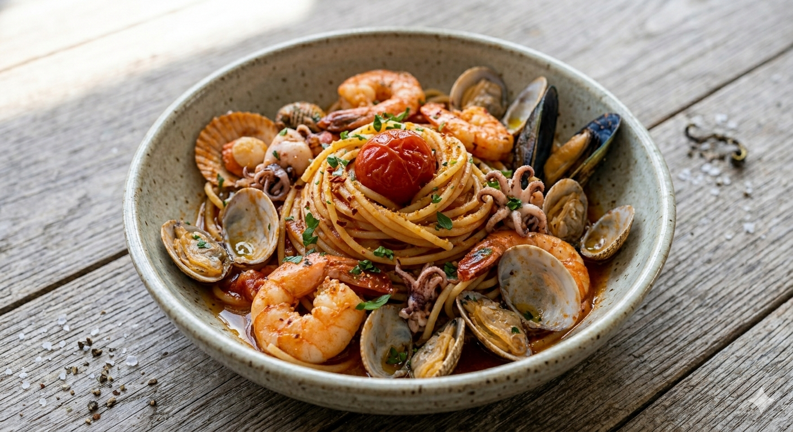

Specialite
至高の「パスタ」と宮城の旬

本格フレンチの技法を、
一皿のパスタに込めて。
当店のイチオシは、フレンチのソース作りを応用した深い味わいのパスタ。地元宮城の漁港から届く新鮮な魚介や、大地の恵みを感じる野菜を贅沢に使用。
「スープのお通し」から始まる、誠実な食材使い。ボリューム満点の「肉料理」や「鴨のコンフィ」まで、居酒屋感覚の気軽さで本格的な味わいをお約束します。

深夜1時まで、
グラス一杯からの安らぎ。
「美味しいものが食べたい、でも気取らずに過ごしたい。」
そんな夜に寄り充うのが私たちのスタイルです。
お一人様セットや充実したワインリストをご用意。カウンター席は、お仕事帰りの一人飲みや大切な方との語らいに最適です。